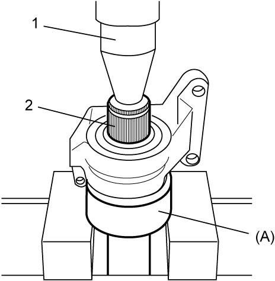

3A
| Drive Intermediate Shaft Assembly Disassembly and Reassembly (Diesel - 2WD Model) |
Disassembly
1)Remove snap ring (1) from drive intermediate shaft (2).

 "Expand image")
2)Using hydraulic press (1) and special tool, remove drive intermediate shaft (2) from intermediate shaft bearing.

 "Expand image")
3)Remove dust seal (1) from intermediate shaft bearing support using special tool.
 "Expand image")
4)Remove bearing support circlip (1) using snap ring pliers (2).
 "Expand image")
5)Using hydraulic press and special tool, remove intermediate shaft bearing from intermediate shaft bearing support (1) by pushing the bearing from transaxle side.
 "Expand image")
6)Remove deflector (1) and/or bearing shield from drive intermediate shaft using flat-bladed screwdriver or the like, if necessary.
 "Expand image")
Reassembly
1)Install new deflector (1) onto drive intermediate shaft, if removed, by tapping flat-surface of deflector indicated by arrow in figure, along the circle little by little using flat-bladed screwdriver covered with cloth (2) to protect it from damage.
NOTICE:
•Denting or scratching the oil seal contact surface of drive intermediate shaft will cause oil leakage.
Do not damage the contact surface when installing the deflector.
•Incomplete installation of the deflector will damage the oil seal and result in oil leakage.
Check that the deflector end (3) contacts the shoulder (4) of the shaft evenly.
Do not damage the contact surface when installing the deflector.
•Incomplete installation of the deflector will damage the oil seal and result in oil leakage.
Check that the deflector end (3) contacts the shoulder (4) of the shaft evenly.
 "Expand image")
2)Install new bearing shield (1) to drive intermediate shaft using special tool, if removed.
 "Expand image")
3)Using hydraulic press and special tools, install new intermediate shaft bearing to intermediate shaft bearing support (1) by pushing the bearing from drive shaft side.
 "Expand image")
4)Install new circlip (1) in groove (2) of intermediate shaft bearing support.
 "Expand image")
5)Apply grease (2 – 3 g (0.07 – 0.10 oz)) to space on bearing as shown in figure.
 "Expand image")
6)Install new dust seal (1) to specified position on drive shaft side of intermediate shaft bearing support (2) in specified direction shown in figure using special tools.
Distance between bearing support surface and dust seal
“a”: 1.5 – 2.5 mm (0.06 – 0.09 in.)
 "Expand image")
7)Press-fit drive intermediate shaft (2) into inner race (1) of intermediate shaft bearing from transaxle side using hydraulic press and special tool.
 "Expand image")
8)Install new snap ring (1) to drive intermediate shaft (2).